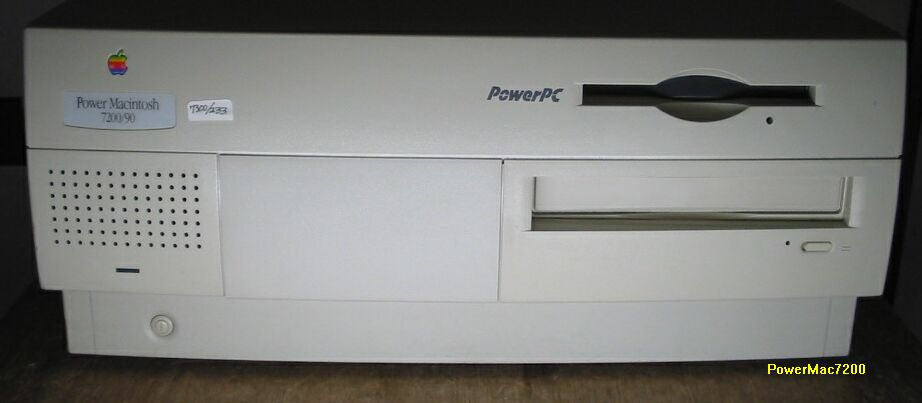

PowerMac7200/7500

この7200は、7500か8500もしくは8600のロジックボードを入れるために、秋葉原で、 メモリーなしの本体のみで1500円、で見付け買ってきたものです。内容は以下の
ようになっていました。
・CPU PPC601 90MHz（177MHz）
・HD SCSI 500MB
・CDROM SCSI 4倍速
・FDD
・RAM 0MB （32MB）
・VRAM 1MB
あらかじめ試験済みの7500と思われるロジックボード（3千円）に交換してみました。 電源その他全く同じなので、何の問題もなく動作しました。いずれ、他のロジックボード
も試してみるつもりです。（2002/7/4記）
PPCマッキントッシュのページに戻る